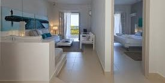

Specialized Services
- Free access to changing rooms and bathroom facilities for temple patrons who have traveled far and need to change to and from church clothes
- A playroom and low-cost, short-term babysitting services for the children of patrons
- Long-term stay accommodations in kitchenette suites for full-time temple missionaries
- Temple history themed reception and sitting area
- A wedding reception hall that can be easily customized with a simple catering menu and kitchen access for food preparation and serving
- A family search center that supports family search and ordinance work
- What other ideas do you have?
Free Amenities
- Breakfast
- Exercise/workout room
- Indoor pool
- WiFi high-speed internet access and smart TVs
- Parking
- Temple shuttle
- Family history consultation and family ordinance card service
Reception
Have your reception here and drop your worries!
We have a variety of food options such as:
- Pasta
- Steak
- Soup
- Sandwiches
- Pizza
- Appetizers
(each option also comes with salad and a dessert)
Let us know which you prefer and we will have everything ready for you!
Our staff will setup the reception hall as well as take everything down. All you have to worry about is being on time and with your spouse for eternity.
Full Time Temple Missionary
If you are serving as a full time missionary, take a look at the luxurious suites you will be staying at!
Temple President

This is the finest suite in the world. There is plenty of living space to hold meetings or invite over your most favorite temple workers. You also have a great view overlooking your blessed temple!
Senior Missionary

For our senior missionaries we offer a spacious suite with plenty of wall space to show off your many side adventures along with your favorite people.
Service Missionary
For our beloved service missionaries we have a three area separated apartment with a spacious bedroom, a living space, and a kitchen.
Patrons

For out day to day patrons we have a very comfortable room with either one or two beds, a microwave, and a spacious bathroom.
If you have any further questions do not hesitate to reach out and ask!
Contact us